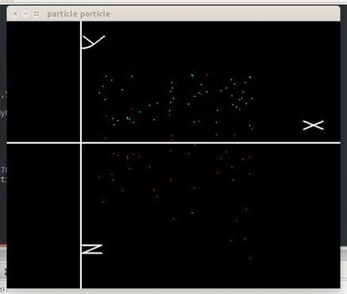
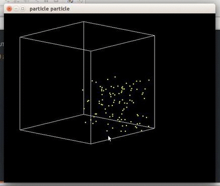
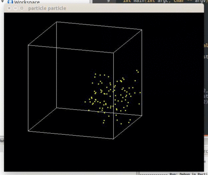

PERTHBLANK.IN
P-Particle
Abstract 摘要:
Use OpenGL to visualize Particle Swarm Optimization(PSO)使用OpenGL可视化 粒子群算法
Detail 细节:
Define the fitness function and particle population, see how the particles move in the space指定适应度函数和种群规模，观察粒子在空间中的移动.
Parameter 参数:
- OS: Ubuntu 14.04
Keywords 关键技术:
- OpenGL
- PSO
Demo 样例:
Eggholder Funtion(2D)

Styblinski-Tang Function(3D)

Sphere Function(3D)